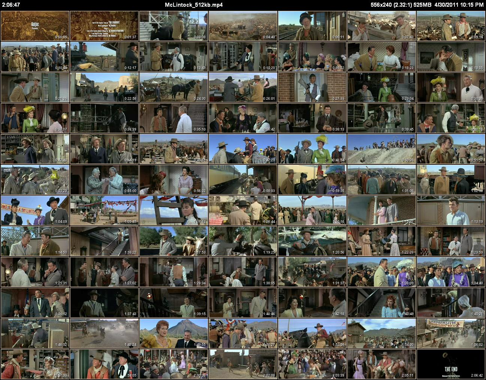

Introduction¶
CLAutoThumbnailer is a command-line program that makes it easy to generate nicely sized thumbnails of a video file (or even entire directories of video files). Instead of having to experiment with the number of columns and rows until you get thumbnails that are not too small or too large, CLAutoThumbnailer will do its best to figure this out for you automatically.
You specify the number of rows (or columns) of thumbnails you want along with the dimensions of the screen you’ll be using to view the thumbnail pages — or just use the defaults — and CLAutoThumbnailer will do the rest. It automatically chooses the best number of columns (or rows) that will fit.
It can create the typical Overview Thumbnail Page that has thumbnails of an entire video on a single page. In addition, it can also create as many Detail Thumbnail Pages as required to have thumbnails made every set interval (for example, every 60 seconds).
 |
|
|  | |
| Overview thumbnail pages | Detail thumbnail pages |
{kind=link}
{kind=link}
{kind=link}
Only in this way is it possible to process entire directories of video files and still get nicely sized thumbs for all of them. This is especially true if your collection contains videos of different aspect ratios such as full-screen 1.33 (4:3), high-definition 1.77 (16:9), wide-screen DVD 2.35, or something in-between. Without automatic row/column determination, most of those types of files will come out with badly sized thumbnail pages.
Features¶
Allows fully “automatic” operation based on the video aspect ratio but is also customizable.
Can generate an Overview thumbnail page of an entire video.
Can generate Detail thumbnail pages where the thumbnails are created using a specified time interval.
Can process entire directories (and sub-directories).
Can process multi-part video files (like DVD .vob sets) as a single long video.
Allows setting starting and ending times for thumbnails.
Allows cropping to remove black bars and stretching to fix distortion.
Supports Command Files for batch processing of files requiring custom settings.
Allows creation of thumbnails at frequent intervals (sub-second) while still preserving thumbnail time accuracy (though some formats are better than others at this).
Is fully documented.
Has fully commented C# source code with documentation project files for Doxygen and Sandcastle Help File Builder. However, now that I’m done with the initial release I probably need to refactor various classes.
Prerequisites¶
Knowledge of how to enter commands in a Windows Command Prompt window.
The free Microsoft Expression Encoder 4 with Service Pack 1 (SP1) which can be downloaded from here or Microsoft Expression Encoder 4 Pro
Video codecs for the video types you want to generate thumbnails for. If you can play your videos using Windows Media Player you probably already have all the codecs you need. Otherwise, I recommend the K-Lite Codec Pack.
While CLAutoThumbnailer should run on Windows Vista or Windows 7, it has only been tested on Windows XP Pro SP3 32-bit.
Downloads¶
Binary Releases¶
Binary executables for CLAutoThumbnailer are available from GitHub. You download either a standard installer (CLAutoThumbnailerSetup.msi) or a zip archive (CLAutoThumbnailer.zip).
Installation¶
Download and install the free Microsoft Expression Encoder 4 with Service Pack 1 (SP1) or Microsoft Expression Encoder 4 Pro.
By default Microsoft Expression Encoder 4 enables all video filters. This may work fine initially but eventually you should see Microsoft Expression Encoder 4’s Video Filter List and learn how to fine tune this. 99% of any problems you have with CLAutoThumbnailer will be the result of this (and the rest are from broken video files).
If you downloaded CLAutoThumbnailerSetup.msi then just run it (if you’ve previously installed CLAutoThumbnailer you first have to uninstall it). The setup program will automatically download the Microsoft .NET Framework 4.0 runtime if it determines it isn’t installed on your system.
Otherwise, if you got CLAutoThumbnailer.zip, unpack it to a folder of your choice. Also be sure to manually install the Microsoft .NET Framework 4.0 runtime if you haven’t already.
If necessary edit <InstallDir>\clautn.bat to point at the correct location of CLAutoThumbnailer.exe. It assumes that’s in C:\Program Files\CLAutoThumbnailer.
Copy <InstallDir>\clautn.bat to some folder that is in the command path specified by the PATH environment variable.
To then run CLAutoThumbnailer, all you have to do is open up a Command Prompt window, switch to a folder that has a video file in it, and type:
clatn videofile.ext
See the following Quick Start section for more details.
Uninstallation¶
Just use the Control Panel’s “Add or Remove Programs” dialog box and remove CLAutoThumbnailer.
Feedback¶
Report bugs or suggestions for improvements at https://github.com/rm2/CLAutoThumbnailer/issues.
Messages can also be sent to me via GitHub.com.
If you are having problems with codecs, particularly if Microsoft Expression Encoder 4 is unable to import a video, then you can try asking about your problem on the Microsoft Expression Encoder Forum. They won’t be able to answer any questions about CLAutoThumbnailer, but getting Microsoft Expression Encoder 4 to correctly import a video will almost always also solve the problem for CLAutoThumbnailer.